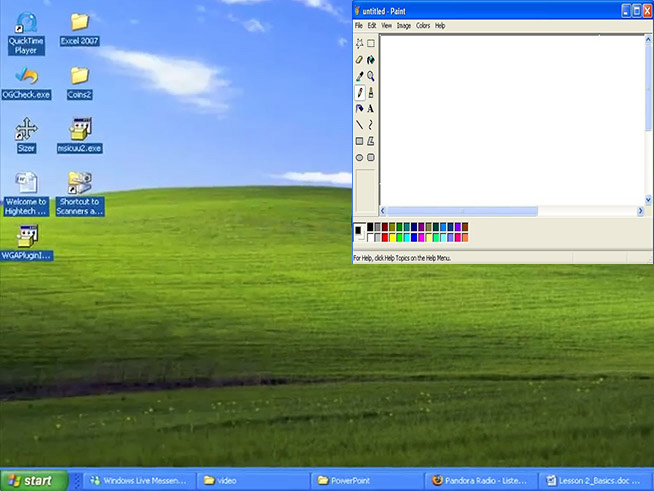
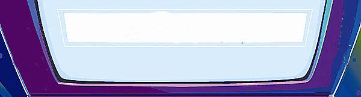

2006: Paint & Garfield Typing Pal
I took a computers class in 2006 at my school where I had to take I typing program called Garfield's Typing Pal which I had a hard time completing the assignments. I remember that one of my inclass assginments,I had to create overlapping shapes in the Paint app and I also had fun playing aroudn with the different fonts that were included.

2007: Type to Learn
At my new school, I learned how to type in a program called "Type To Learn 3" which I ended up completing. In the program, a character called father time takes you in his time traveling machine into important historical events as you complete different fun games. It does get harder to complete the lessons once you progress with the game.
